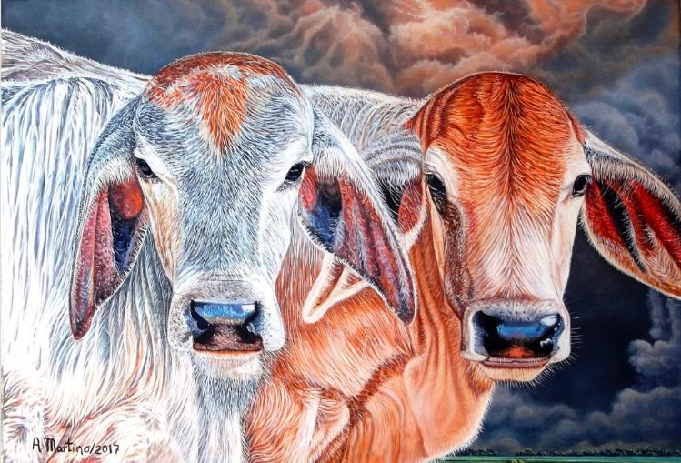

Breve biografía de Anibal Martino: su formación, estilo pictórico y visión artística.

Breve biografía de Anibal Martino: su formación, estilo pictórico y visión artística.
— Descripción breve del hito en la trayectoria del artista.
— Descripción breve del hito en la trayectoria del artista.
— Lugar del evento
Breve descripción del evento o exposición.